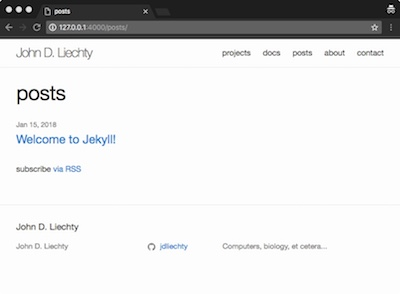
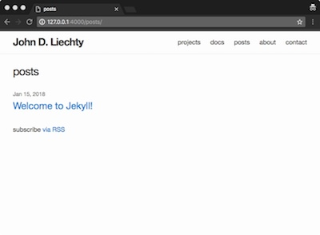

I wanted to get a website up-and-running on GitHub with Jekyll using Jekyll’s Minima theme but with a few modifications: Shorter blog-like posts would appear in a separate page (not on the landing page) and there would be separate pages for coding projects and longer documents (each with their own entry in the menus). Below is a very brief outline of the steps taken to do that.
Started with new, empty repository <your-github-handle>.github.io on GitHub and using Jekyll is
installed via homebrew on local computer (running OS X).
Then in directory for webpage on local computer.
shell
$ jekyll new <your-github-handle>.github.io
$ cd <your-github-handle>.github.io
And test:
shell
$ jekyll serve
Initialized empty Git repository in directory and set remote directory to <your-github-handle>.github.io
To locate minima configuration files on the local computer:
shell
$ bundle show minima
/usr/local/lib/ruby/gems/2.5.0/gems/minima-2.1.1
Copied the minima configuration files into local directory:
shell
$ cp -R /usr/local/lib/ruby/gems/2.5.0/gems/minima-2.1.1/_includes .
$ cp -R /usr/local/lib/ruby/gems/2.5.0/gems/minima-2.1.1/_layouts .
$ cp -R /usr/local/lib/ruby/gems/2.5.0/gems/minima-2.1.1/_sass .
$ cp -R /usr/local/lib/ruby/gems/2.5.0/gems/minima-2.1.1/assets .
Then:
shell
$ jekyll serve
and you should see the jekyll minima default website at http://127.0.0.1:4000
Added custom domain info to CNAME file.
Edited title, author, etc. information in _config.yml
Created files for the four additional menu items (in addition to “about”):
shell
$ touch contact.md docs.md posts.md projects.md
Added the following to the _contig.yml to designate which menus should appear and in what order:
yml
header_pages:
- projects.md
- docs.md
- posts.md
- about.md
- contact.md
Edited about.md to read:
layout: page title: about permalink: /about/ — ```
and edited for each respective page for menus:
layout: page title: contact permalink: /contact/ — ```
layout: page title: docs permalink: /docs/ — ```
layout: page title: posts permalink: /posts/ — ```
layout: page title: projects permalink: /projects/ — ```
shell
$ touch README.md
Removed “posts” loop in _layouts/home.html
Added “posts” loop to posts.md

Made the site-title a little heavier. In _sass/minima/_layout.scss:
css
.site-title {
@include relative-font-size(1.625);
font-weight: 300;
changed this to:
css
.site-title {
@include relative-font-size(1.625);
font-weight: 600;
and reduced the size of the page titles
In _sass/minima/_layout.scss
Changed:
css
.post-title {
@include relative-font-size(2.625);
to
css
.post-title {
@include relative-font-size(1.75);
And in _layouts/default.html, commented out liquid tag for including footer:
html
{% comment %}
{% include footer.html %}
{% endcomment %}
Make sure it looks OK locally:
shell
$ jekyll serve

Then:
shell
$ git add .
$ git commit -m "Changed page header font, removed footer"
$ git push -u origin master